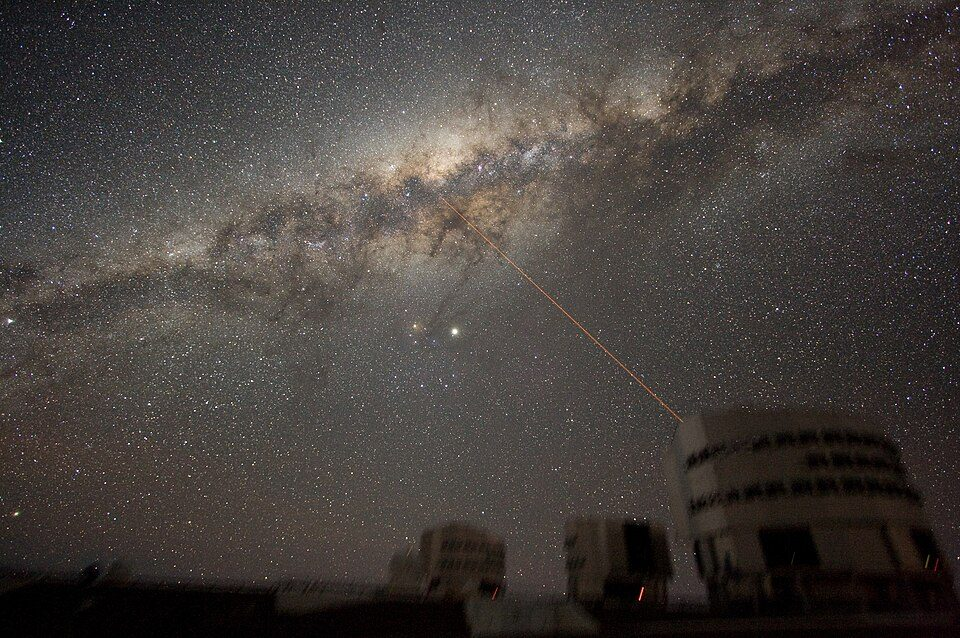

Universo · 6 fichas
Curiosidades y cifras
Simuladores, récords, distancias, anécdotas, descubrimientos sorprendentes y falsos mitos sobre el universo.
El universo está lleno de cifras que marean y de historias que parecen inventadas. Aquí las hemos reunido: simuladores para calcular tu peso en Júpiter o tu edad en Marte, los récords del cosmos, cómo se miden las distancias, las mejores anécdotas de la historia de la astronomía y los descubrimientos que más han sorprendido a los científicos.
 Simuladores del universoCalcula tu peso en otros mundos, tu edad en cada planeta, cuánto tardarías en llegar a las estrellas y la escala real del sistema solar.
Simuladores del universoCalcula tu peso en otros mundos, tu edad en cada planeta, cuánto tardarías en llegar a las estrellas y la escala real del sistema solar. Cifras y récords del universoLo más grande, lo más caliente, lo más rápido y lo más lejano: los récords del cosmos en una sola página.
Cifras y récords del universoLo más grande, lo más caliente, lo más rápido y lo más lejano: los récords del cosmos en una sola página.
Distancias y escalas del universoUnidad astronómica, año luz y pársec: cómo se miden las distancias imposibles y cómo hacerse una idea de ellas. Anécdotas de la astronomía y del espacioDel astrónomo que perdió la nariz en un duelo al bocadillo que viajó de contrabando al espacio: las historias más curiosas.
Anécdotas de la astronomía y del espacioDel astrónomo que perdió la nariz en un duelo al bocadillo que viajó de contrabando al espacio: las historias más curiosas. Descubrimientos sorprendentesVisitantes de otras estrellas, galaxias demasiado tempranas, ondas que estiran el espacio y la foto de un agujero negro: las noticias que asombraron a la ciencia.
Descubrimientos sorprendentesVisitantes de otras estrellas, galaxias demasiado tempranas, ondas que estiran el espacio y la foto de un agujero negro: las noticias que asombraron a la ciencia. Falsos mitos sobre el espacio¿Se ve la Gran Muralla desde el espacio? ¿Explotarías sin traje? ¿Hace más calor en verano porque estamos más cerca del Sol? Lo que es cierto y lo que no.
Falsos mitos sobre el espacio¿Se ve la Gran Muralla desde el espacio? ¿Explotarías sin traje? ¿Hace más calor en verano porque estamos más cerca del Sol? Lo que es cierto y lo que no.